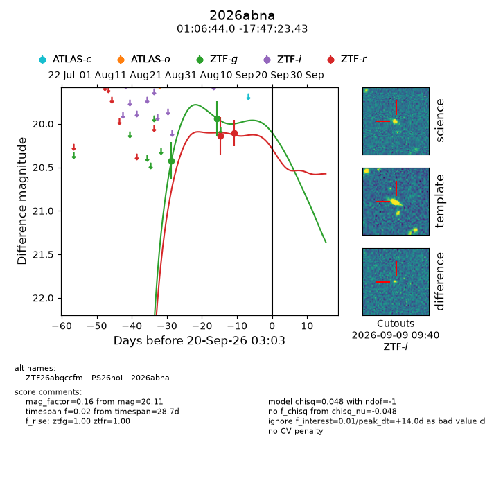
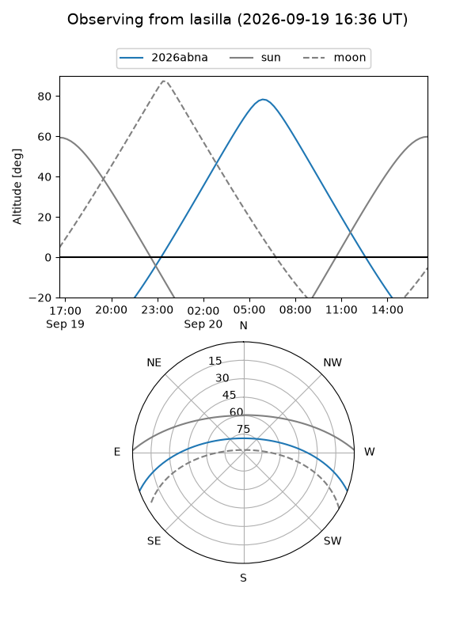
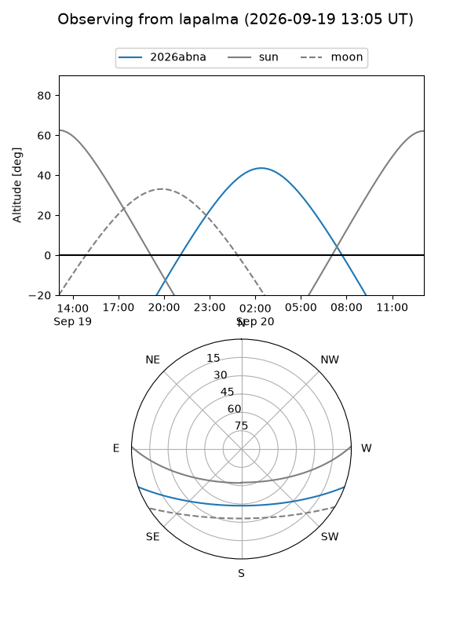
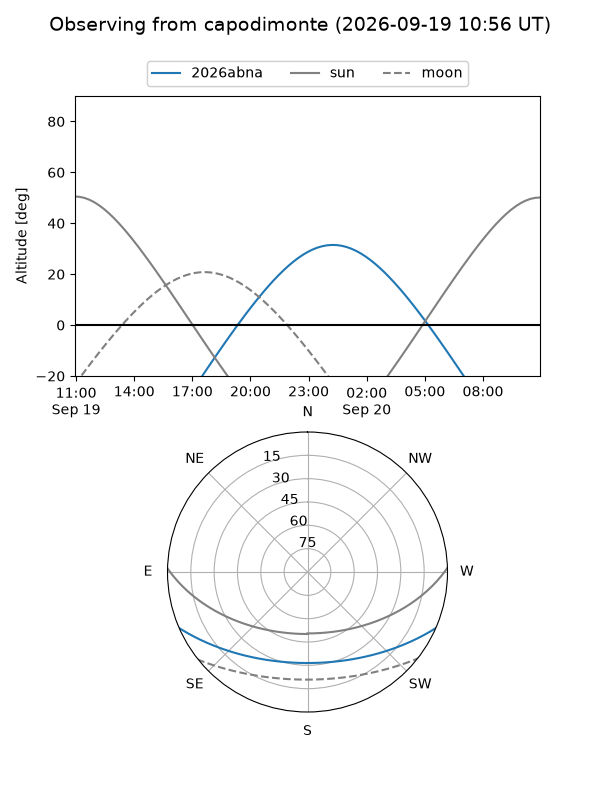
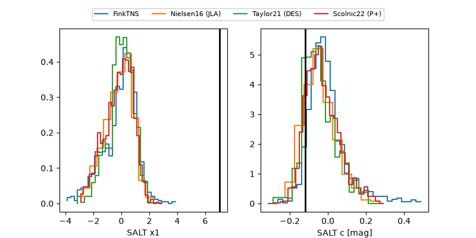

2026abna
Target 2026abna at 2026-09-20 14:35
Aliases and brokers:
FINK-ZTF: ztf.fink-portal.org/ZTF26abqccfm
Lasair-ZTF: lasair-ztf.lsst.ac.uk/objects/ZTF26abqccfm
ALeRCE-ZTF: alerce.online/object/ZTF26abqccfm
YSE-PZ: ziggy.ucolick.org/yse/transient_detail/2026abna
TNS name: wis-tns.org/object/2026abna
Direct TNS query: direct search
alt names
ZTF26abqccfm (ztf,fink_ztf)
2026abna (tns,yse)
PS26hoi (panstarrs)
Coordinates:
equatorial (ra, dec) = 16.6832,-17.78984
equatorial (HMS+DMS) = 01:06:43.98,-17:47:23.43
galactic (l, b) = (144.4201,-80.01748)
Flags:
TNS type: nan
peak dt: +14.5
Photometry:
last ztfg=19.94, ztfr=20.11
2 ztfg, 2 ztfr detections
Lightcurve

Visibility



Additional plots
